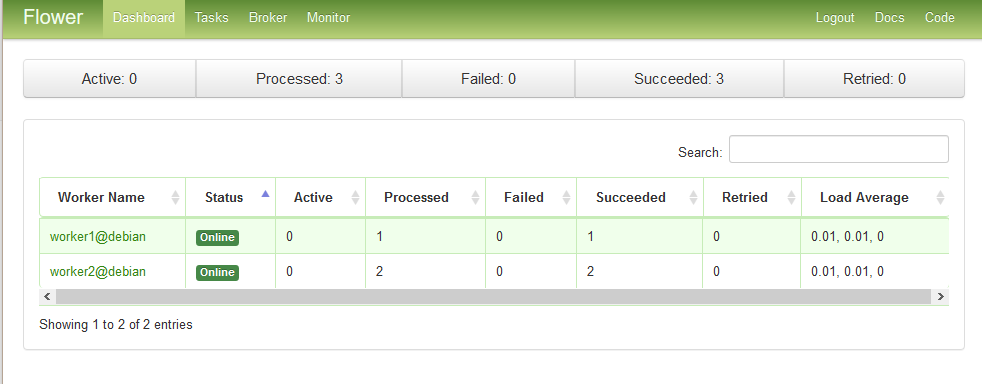

How to Set Up a Task Queue with Celery and RabbitMQ
Updated by Linode Contributed by Florent Houbart
Celery is a Python Task-Queue system that handle distribution of tasks on workers across threads or network nodes. It makes asynchronous task management easy. Your application just need to push messages to a broker, like RabbitMQ, and Celery workers will pop them and schedule task execution.
Celery can be used in multiple configuration. Most frequent uses are horizontal application scaling by running resource intensive tasks on Celery workers distributed across a cluster, or to manage long asynchronous tasks in a web app, like thumbnail generation when a user post an image. This guide will take you through installation and usage of Celery with an example application that delegate file downloads to Celery workers, using Python 3, Celery 4.1.0, and RabbitMQ.
Before You Begin
Familiarize yourself with our Getting Started guide and complete the steps for setting your Linode’s hostname and timezone.
This guide will use
sudowherever possible. Complete the sections of our Securing Your Server to create a standard user account, harden SSH access and remove unnecessary network services.Update your system:
sudo apt update && sudo apt upgrade
NoteThis guide is written for a non-root user. Commands that require elevated privileges are prefixed withsudo. If you’re not familiar with thesudocommand, see the Users and Groups guide.
Install a Python 3 Environment
Download and install Miniconda:
curl -OL https://repo.continuum.io/miniconda/Miniconda3-latest-Linux-x86_64.sh bash Miniconda3-latest-Linux-x86_64.shYou will be prompted several times during the installation process. Review the terms and conditions and select “yes” for each prompt.
Restart your shell session for the changes to your PATH to take effect.
Check your Python version:
python --version
Install Celery
Celery is available from PyPI. The easiest and recommended way is to install it with pip. You can go for a system wide installation for simplicity, or use a virtual environment if other Python applications runs on your system. This last method installs the libraries on a per project basis and prevent version conflicts with other applications.
System Wide Installation
Chose a system wide installation if your host won’t run other python applications with specific version libraries requirements. Install Celery with the following command:
pip install celery
Installation in a Python Virtual Environment
If other Python application are running on your host and you prefer to manage your libraries on a per project basis, use a virtual environment installation. This guide will use Anaconda but Virtualenv is also a good choice.
Create your virtual environment:
conda create -n celeryenvActivate your virtual environment:
source activate celeryenvYour shell prompt will change to indicate which environment you are using
Install Celery in the virtual environment:
pip install celery
NoteIf you use a virtual environment, don’t forget to activate your environment with step 3 when working on your project. All command in this guide assume the Celery virtual environment is activated.
Install RabbitMQ
On Debian/Ubuntu:
Install RabbitMQ with
apt. The following command will install and start RabbitMQ with an acceptable default configuration:sudo apt-get install rabbitmq-server
On CentOS:
Install the
rabbitmq-server.noarchpackage, enable the service to start at boot time and start the RabbitMQ server:sudo yum install rabbitmq-server.noarch systemctl enable rabbitmq-server systemctl start rabbitmq-server
This will install RabbitMQ with the default configuration.
Write a Celery Application
A Celery application is composed of two parts:
Workers that wait for messages from RabbitMQ and execute the tasks.
Client that submit messages to RabbitMQ to trigger task execution, and eventually retrieve the result at a later time
The tasks are defined in a module that will be used both by the workers and the client. Workers will run the code to execute tasks, and clients will only use function definitions to expose them and hide the RabbitMQ publishing complexity.
Create a directory
downloaderAppto hold our new python module, and a directorydownloadedFileswhere the downloaded files will be stored:mkdir ~/downloadedFiles ~/downloaderApp; cd ~/downloaderAppCreate a
downloaderApp.pymodule that will contain two functions,downloadandlist, that will be the asynchronous tasks. Replaceceleryin theBASEDIRpath with your system username.- ~/downloaderApp/downloaderApp.py
-
1 2 3 4 5 6 7 8 9 10 11 12 13 14 15 16 17 18 19 20 21 22 23 24 25 26 27 28 29 30 31from celery import Celery import urllib.request import os # Where the downloaded files will be stored BASEDIR="/home/celery/downloadedFiles" # Create the app and set the broker location (RabbitMQ) app = Celery('downloaderApp', backend='rpc://', broker='pyamqp://guest@localhost//') @app.task def download(url, filename): """ Download a page and save it to the BASEDIR directory url: the url to download filename: the filename used to save the url in BASEDIR """ response = urllib.request.urlopen(url) data = response.read() with open(BASEDIR+"/"+filename,'wb') as file: file.write(data) file.close() @app.task def list(): """ Return an array of all downloaded files """ return os.listdir(BASEDIR)
All the magic happens in the @app.task annotation. This tells celery that this function will not be run on the client, but sent to the workers via RabbitMQ. All the Celery configuration happens in following line:
app = Celery('downloaderApp', backend='rpc://', broker='pyamqp://guest@localhost//')
This line creates:
A Celery application named
downloaderAppA
brokeron the localhost that will accept message via *Advanced Message Queuing Protocol (AMQP), the protocol used by RabbitMQA response
backendwhere workers will store the return value of the task so that clients can retrieve it later (remember that task execution is asynchronous). If you omitbackend, the task will still run, but the return value will be lost.rpcmeans the response will be sent to a RabbitMQ queue in a Remote Procedure Call pattern.
Start the Workers
The command celery worker is used to start a Celery worker. The -A flag is used to set the module that contain the Celery app. The worker will read the module and connect to RabbitMQ using the parameters in the Celery() call.
Start a worker in debug mode with the following command:
celery -A downloaderApp worker --loglevel=debugOpen another ssh session to run the client (don’t forget to activate your virtual environment if needed), go to your module folder and start a python shell:
cd ~/downloaderApp pythonIn the python shell, call the
delay()method to submit a job to RabbitMQ, and then use theready()function to determine if the task is finished:from downloaderApp import download,list r = download.delay('https://www.python.org/static/community_logos/python-logo-master-v3-TM.png', 'python-logo.png') r.ready()Exit the python shell, and check that the python logo has been downloaded:
ls ~/downloadedFilesStart the python shell again and run the
listtask. Get the result with theget()function:from downloaderApp import download,list r = list.delay() r.ready() r.get(timeout=1)If you omit the
timeoutparameter, the client will wait for the task to complete in a synchronous manner. This is bad practice and should be avoided.
Start the Workers as Daemons
In a production environment with more than one worker, the workers should be daemonized so that they are started automatically at server startup.
Using
sudo, create a new service definition file in/etc/systemd/system/celeryd.service. Change theUserandGroupproperties according to your actual user and group name:- /etc/systemd/system/celeryd.service
-
1 2 3 4 5 6 7 8 9 10 11 12 13 14 15 16 17 18 19 20 21 22[Unit] Description=Celery Service After=network.target [Service] Type=forking User=celery Group=celery EnvironmentFile=/etc/default/celeryd WorkingDirectory=/home/celery/downloaderApp ExecStart=/bin/sh -c '${CELERY_BIN} multi start ${CELERYD_NODES} \ -A ${CELERY_APP} --pidfile=${CELERYD_PID_FILE} \ --logfile=${CELERYD_LOG_FILE} --loglevel=${CELERYD_LOG_LEVEL} ${CELERYD_OPTS}' ExecStop=/bin/sh -c '${CELERY_BIN} multi stopwait ${CELERYD_NODES} \ --pidfile=${CELERYD_PID_FILE}' ExecReload=/bin/sh -c '${CELERY_BIN} multi restart ${CELERYD_NODES} \ -A ${CELERY_APP} --pidfile=${CELERYD_PID_FILE} \ --logfile=${CELERYD_LOG_FILE} --loglevel=${CELERYD_LOG_LEVEL} ${CELERYD_OPTS}' [Install] WantedBy=multi-user.target
Create a
/etc/default/celerydconfiguration file:- /etc/default/celeryd
-
1 2 3 4 5 6 7 8 9 10 11 12 13 14 15 16 17# The names of the workers. This example create two workers CELERYD_NODES="worker1 worker2" # The name of the Celery App, should be the same as the python file # where the Celery tasks are defined CELERY_APP="downloaderApp" # Log and PID directories CELERYD_LOG_FILE="/var/log/celery/%n%I.log" CELERYD_PID_FILE="/var/run/celery/%n.pid" # Log level CELERYD_LOG_LEVEL=INFO # Path to celery binary, that is in your virtual environment CELERY_BIN=/home/celery/miniconda3/bin/celery
Create log and pid directories:
sudo mkdir /var/log/celery /var/run/celery sudo chown celery:celery /var/log/celery /var/run/celeryReload systemctl daemon. You should run this command each time you change the service definition file.
sudo systemctl daemon-reloadEnable the service to startup at boot:
sudo systemctl enable celerydStart the service
sudo systemctl start celerydCheck that your workers are running via log files:
cat /var/log/celery/worker1.log cat /var/log/celery/worker2.logSend some tasks to both workers, in a python shell from the directory
/home/celery/downloaderApp:from downloaderApp import download,list r1 = download.delay('https://www.linode.com/media/images/logos/standard/light/linode-logo_standard_light_large.png', 'linode-logo.png') r2 = list.delay() r2.get(timeout=1)Depending on how quickly you enter the commands, the worker for
listtask may finish before the worker fordownloadtask and you may not see the Linode logo in the list. Have a look at log files, like in step 7, and you will see which worker handled each task.
Monitor your Celery Cluster
The celery binary provide some commands to monitor workers and tasks, far more convenient than browsing log files:
Use the status command to get the list of workers:
celery -A downloaderApp statusworker1@celery: OK worker2@celery: OK celery@celery: OKUse the inspect active command to see what the workers are currently doing:
celery -A downloaderApp inspect active-> worker1@celery: OK - empty - -> worker2@celery: OK - empty - -> celery@celery: OK - empty -Use the inspect stats command to get statistics about the workers. It gives lot of information, like worker resource usage under
rusagekey, or the total tasks completed undertotalkey.celery -A downloaderApp inspect stats
Monitor a Celery Cluster with Flower
Flower is a web-based monitoring tool that can be used instead of the celery command.
Install Flower:
pip install wheel flowerIf you run CentOS, you need to open your firewall on Flower port (default 5555). Skip this step if you are on Debian:
Get your current zone, which will normally be
public:firewall-cmd --get-active-zonesOpen port 5555. Change the zone according to your configuration:
sudo firewall-cmd --zone=public --add-port=5555/tcp --permanentReload the firewall:
sudo firewall-cmd --reload
Navigate to the directory with your Celery app and start Flower. 5555 is the default port, but this can be changed using the
--portflag:cd /home/celery/downloaderApp celery -A downloaderApp flower --port=5555Point your browser to
localhost:5555to view the dashboard:
Note
If Flower is exposed through a public IP address, be sure to take additional steps to secure this through a reverse proxy.
Start Celery Tasks from Other Languages
Celery’s ease of use comes from the decorator @task that adds Celery methods to the function object. This magic cannot be used in every programming language, so Celery provides two other methods to communicate with workers:
Webhooks: Flower provides an API that allow you to interact with Celery by means of REST HTTP queries.
AMQP: The
@taskdecorator sends message to the broker when you call celery methods like.delay(). Some languages provide modules that perform this task for you, including node-celery for NodeJS, or celery-php for PHP.
You can use curl to practice interacting how to use the Flower API.
Start Flower, if it’s not already running:
cd /home/celery/downloaderApp celery -A downloaderApp flower --port=5555Submit a download via the task API:
curl -X POST -d '{"args":["http://www.celeryproject.org/static/img/logo.png","celery-logo.png"]}' 'http://localhost:5555/api/task/async-apply/downloaderApp.download?refresh=True'{"task-id": "f29ce7dd-fb4c-4f29-9adc-f834250eb14e", "state": "PENDING"}The
/api/task/async-applyendpoint makes an asynchronous call to one of the app’s tasks, in this casedoanloaderApp.download. You can make a synchronous call with/task/api/apply.Open Flower UI in your browser and see that the task has been accepted.
You can find a complete list of Flower API endpoints in the official API documentation.
More Information
You may wish to consult the following resources for additional information on this topic. While these are provided in the hope that they will be useful, please note that we cannot vouch for the accuracy or timeliness of externally hosted materials.
Join our Community
Find answers, ask questions, and help others.
This guide is published under a CC BY-ND 4.0 license.